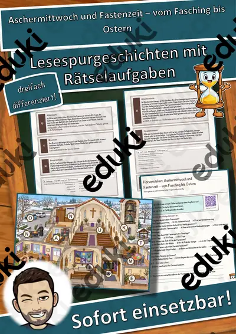
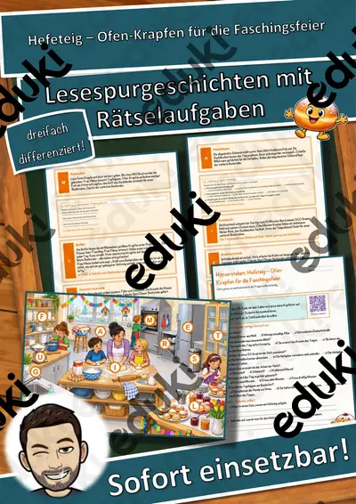
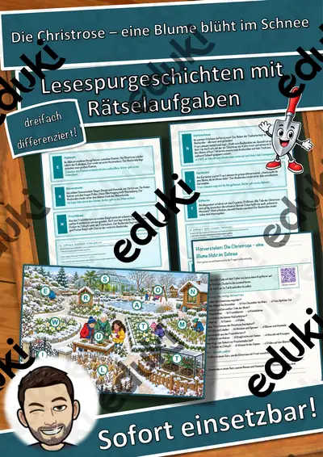
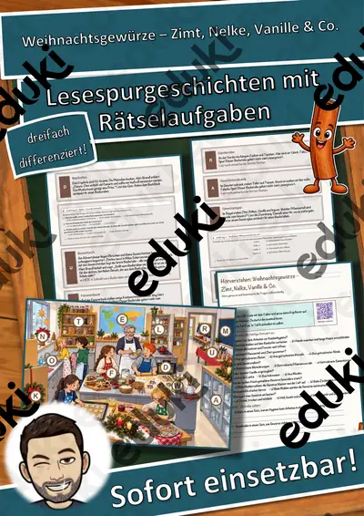
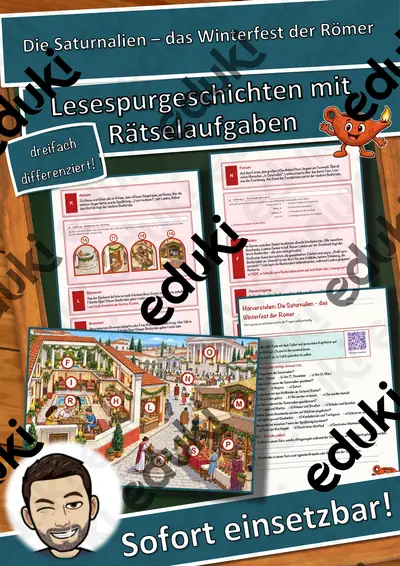
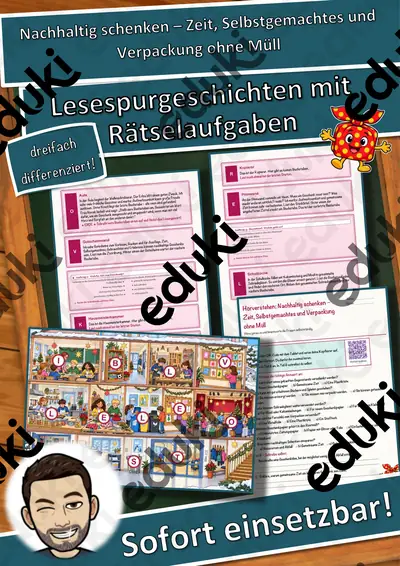
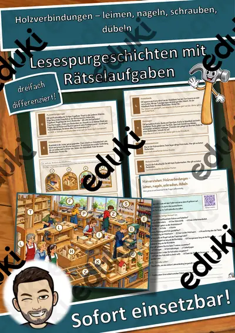
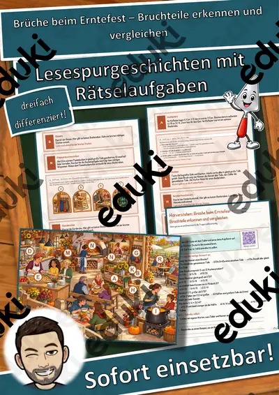
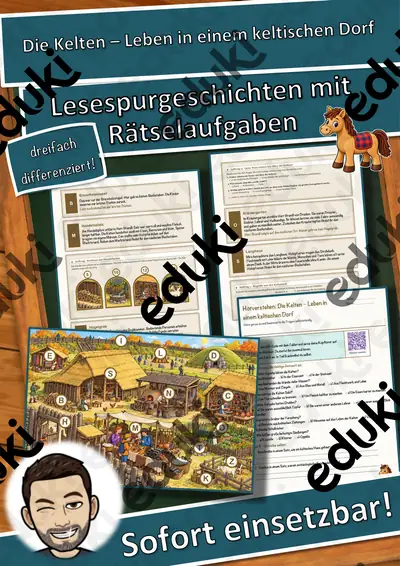

The Apple Cellar – Lesespurgeschichte mit Rätselaufgaben auf Englisch (Klasse 6)

Materialpaket Advent und Winter für die 6. Klasse: 7 Lesespurgeschichten mit Rätselaufgaben (Weihnachtsbasar, Saturnalien, Lichterfeste & mehr)

The Quiet Snowy Forest – Lesespurgeschichte mit Rätselaufgaben auf Englisch (Klasse 6)

Christmas Tree Farm – Lesespurgeschichte mit Rätselaufgaben auf Englisch (Klasse 6)

Breaking Through the Ice – Lesespurgeschichte mit Rätselaufgaben auf Englisch (Klasse 6)

Winter Wildlife Trail – Lesespurgeschichte mit Rätselaufgaben auf Englisch (Klasse 6)

Der Vorlesetag – gut vorlesen, gespannt zuhören – Lesespurgeschichte mit Rätselaufgaben (Klasse 6)

Aschermittwoch und Fastenzeit – vom Fasching bis Ostern – Lesespurgeschichte mit Rätselaufgaben (Klasse 6)

Potato Harvest on the Farm – Lesespurgeschichte mit Rätselaufgaben auf Englisch (Klasse 6)

Bärlauch – Frühlingskraut mit giftigen Doppelgängern – Lesespurgeschichte mit Rätselaufgaben (Klasse 6)

Hefeteig – Ofen-Krapfen für die Faschingsfeier – Lesespurgeschichte mit Rätselaufgaben (Klasse 6)

Die Christrose – eine Blume blüht im Schnee – Lesespurgeschichte mit Rätselaufgaben (Klasse 6)

Der Mann aus dem Eis – ein Gletscherfund aus der Jungsteinzeit – Lesespurgeschichte mit Rätselaufgaben (Klasse 6)

Weihnachtsgewürze – Zimt, Nelke, Vanille & Co. – Lesespurgeschichte mit Rätselaufgaben (Klasse 6)

Die Saturnalien – das Winterfest der Römer – Lesespurgeschichte mit Rätselaufgaben (Klasse 6)

Nachhaltig schenken – Zeit, Selbstgemachtes und Verpackung ohne Müll – Lesespurgeschichte mit Rätselaufgaben (Klasse 6)

Den Tisch festlich decken – Gedeck, Tischsitten und Tischschmuck – Lesespurgeschichte mit Rätselaufgaben (Klasse 6)

Upcycling – aus Alt mach Neu – Lesespurgeschichte mit Rätselaufgaben (Klasse 6)

Milch – vom Hof ins Kühlregal – Lesespurgeschichte mit Rätselaufgaben (Klasse 6)

Die Klaviatur – Stammtöne, Halbtöne und Vorzeichen – Lesespurgeschichte mit Rätselaufgaben (Klasse 6)

Holzverbindungen – leimen, nageln, schrauben, dübeln – Lesespurgeschichte mit Rätselaufgaben (Klasse 6)

Brüche beim Erntefest – Bruchteile erkennen und vergleichen – Lesespurgeschichte mit Rätselaufgaben (Klasse 6)

Die Kelten – Leben in einem keltischen Dorf – Lesespurgeschichte mit Rätselaufgaben (Klasse 6)

Sagen – geheimnisvolle Geschichten aus alter Zeit – Lesespurgeschichte mit Rätselaufgaben (Klasse 6)

Was eine Gemeinde alles leistet – von Wasser bis Winterdienst – Lesespurgeschichte mit Rätselaufgaben (Klasse 6)

Der Weihnachtsbasar – planen, kalkulieren, verkaufen – Lesespurgeschichte mit Rätselaufgaben (Klasse 6)

Präsentationen gestalten – Folien, die überzeugen – Lesespurgeschichte mit Rätselaufgaben (Klasse 6)

Suchen und Sortieren – Algorithmen mit Spielkarten – Lesespurgeschichte mit Rätselaufgaben (Klasse 6)

Urheberrecht und Lizenzen – Bilder, Musik und Texte richtig nutzen – Lesespurgeschichte mit Rätselaufgaben (Klasse 6)

Fehlersuche – Bugs finden und beheben – Lesespurgeschichte mit Rätselaufgaben (Klasse 6)
Keine Materialien gefunden – versuch einen anderen Suchbegriff oder Filter.
Die Mitte der Orientierungsstufe
In Klasse 6 sind die Kinder angekommen und lernen Fächer in der Tiefe. Der Katalog dazu ist besonders umfangreich: Fachtexte zu Pflanzen, Tieren und Jahreszeiten stehen neben Lesespuren zu Geschichte und Naturwissenschaft.
Biologie, Deutsch und Chemie
Die Biologie liefert „Die Christrose“, „Das Blatt“, „Die Blüte“ und „Der Baum“. In Deutsch gehören „Der Vorlesetag“, „Upcycling“ und „Holzverbindungen“ dazu. Chemie kommt mit Alltagsstoffen: „Nagellack“, „Holzkohle“, „Hochofen“ und „Helium“. Alle sind Lückentexte mit Hörfassung.
Geschichte und Erdkunde
Wer Zeitreisen mag, wählt „Der Mann aus dem Eis“, „Die Kelten“, „Die Wikinger“ oder „Die Saturnalien“. Erdkunde ergänzt „Der Wasserkreislauf“, „Das Gewitter“, „Das Trinkwasser“ und „Milch“.
Englisch, Kunst, Mathe, Sport
Englische Lesespuren heißen „The Apple Cellar“ und „Christmas Tree Farm“. Kunst bietet „Mobiles“, „Illustration“ und „Trickfilm und Daumenkino“. Mathematik: „Brüche beim Erntefest“, „Das Schulfest“ und „Raumgeometrie“. Sport widmet sich „Puls und Atmung beim Sport“ und „Akrobatik“.
Vom Überblick zum passenden Blatt
Weil der Katalog für diese Stufe so umfangreich ist, lohnt es sich, mit dem Fach zu beginnen und dann ein Thema zu wählen. Biologie und Deutsch liefern die meisten Lückentexte, Geschichte und Erdkunde die erzählenden Lesespuren. Jede Lesespur bringt drei Niveaustufen mit, sodass Gruppen mit unterschiedlichem Lesetempo gemeinsam arbeiten. Wer nur einen Anlass sucht, etwa einen Vertretungstag, wählt ein selbsterklärendes Blatt mit Lösung.
Zur Orientierung
Die Namen der Materialien sagen meist schon, worum es geht: Ein Titel wie „Das Gewitter“ führt in ein Phänomen ein, ein Titel wie „Die Kelten“ in eine Epoche. Das erleichtert die Auswahl in der langen Liste erheblich, und die Schlagwortsuche ergänzt, was der Fachfilter nicht trifft.
Häufige Fragen
Warum gibt es für Klasse 6 so viel Material?
Der Katalog enthält für diesen Jahrgang eine lange Reihe von Lückentexten zu Biologie und Deutsch.
Gibt es etwas für Geschichte?
Ja, eine Reihe von Lesespuren zu Epochen von der Eiszeit bis zu den Wikingern.
Sind englische Lesespuren verständlich?
Sie sind in einfachem Englisch gehalten und liegen in Niveaustufen vor.
Wie finde ich schnell ein Thema?
Über Suche und Fachfilter. So grenzt sich die lange Liste in Sekunden ein.